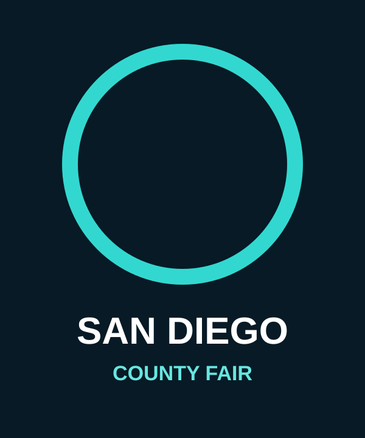
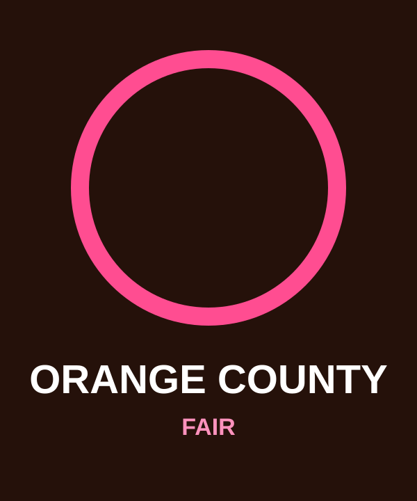
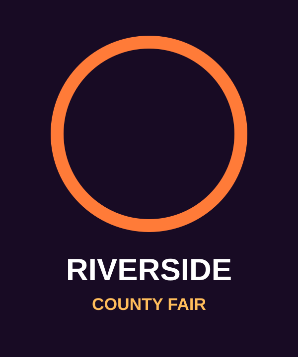

The original
San Diego County Fair
The fairground where the OATF story began—and where community, entertainment and fair tradition first came together.

The California network
Out at the Fair grew through partnerships with fairs that believed LGBTQ+ inclusion should live inside the full fair experience—not somewhere separate from it.
Built through relationships
Every fairground has its own audience, traditions, stages and personality. OATF’s role has always been to adapt the experience while protecting the same core promise: a family-friendly place where LGBTQ+ guests, allies and families know they belong.
Current destinations

The fairground where the OATF story began—and where community, entertainment and fair tradition first came together.

A major Southern California destination where OATF brings live entertainment, community and all-ages visibility to the Plaza Stage.

Part of the broader California network and the continuing evolution of the OATF partnership model.
The extended legacy
Part of the past
Marin County Fair was part of Out at the Fair’s expansion and helped shape the network’s award-winning growth era.
In 2026, the fair turned the concept into its own independent Pride Day. Marin is no longer presented as a current Out at the Fair destination, but it remains part of the organization’s history.
View the legacy chapter →Bring OATF to your fair
Learn how the partnership model supports fair leadership, entertainment teams, community organizations and guests.